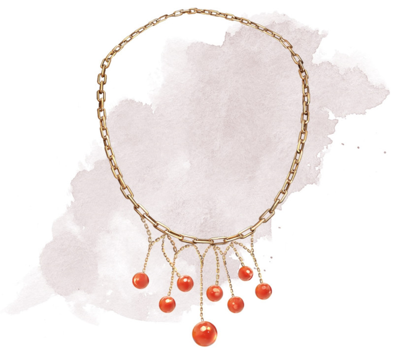

Collier de boules de feu
Objet merveilleux, rare
Ce collier possède 1d6 + 3 perles. Vous pouvez utiliser une action pour détacher une perle et la jeter jusqu'à 18 mètres de distance. Quand elle atteint la fin de sa trajectoire, la perle explose comme une boule de feu de niveau 3 (sauvegarde DD 15).
Vous pouvez lancer plusieurs perles, ou même l'ensemble du collier, par une action. Lorsque vous procédez ainsi, augmentez le niveau de la boule de feu de 1 pour chaque perle au-delà de la première.
Vous pouvez lancer plusieurs perles, ou même l'ensemble du collier, par une action. Lorsque vous procédez ainsi, augmentez le niveau de la boule de feu de 1 pour chaque perle au-delà de la première.
Dungeon Master´s Guide (SRD)
